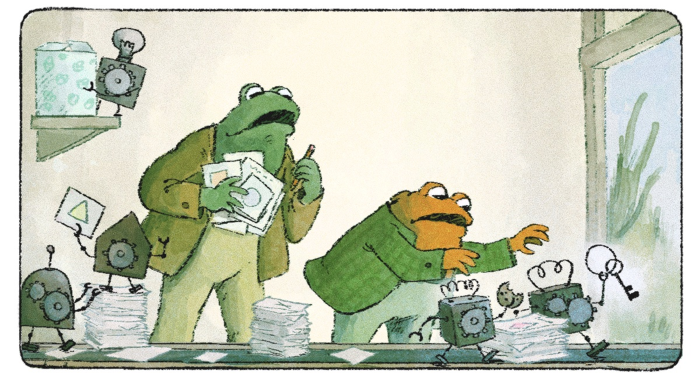

Italian translation · AI communication · 2026
Frog and Toad,
in Italian.
An Italian translation of Elizabeth Van Nostrand’s Frog and Toad and the Increasingly Capable Machines, an illustrated story that makes questions about AI behaviour accessible through narrative.
Read the Italian edition- Role
- Italian translator
- Author
- Elizabeth Van Nostrand
- Illustrations
- HungerArtist
- Publication
- frogandtoad.ai/it

The contribution
Bring the story to Italian readers.
I translated the story into Italian as Rana e Rospo e le macchine sempre più capaci. The contribution includes the narrative, illustration descriptions and reader interface text, carrying the original’s conversational tone into the Italian edition.
The result
Published on the author’s website.
The author incorporated the translation into frogandtoad.ai and added a translator credit for Luca Pedersoli. The official Italian edition is the reference link for reading and sharing the work.